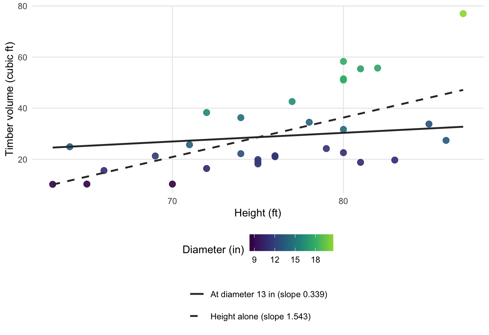
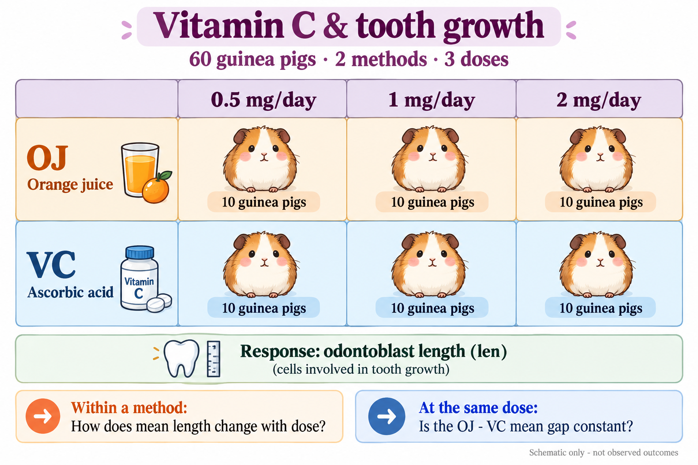
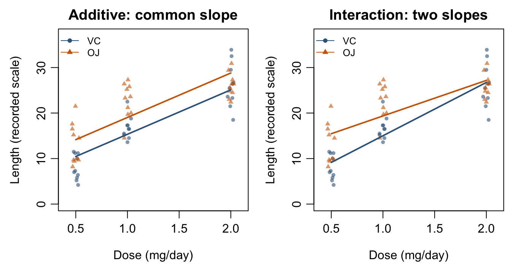
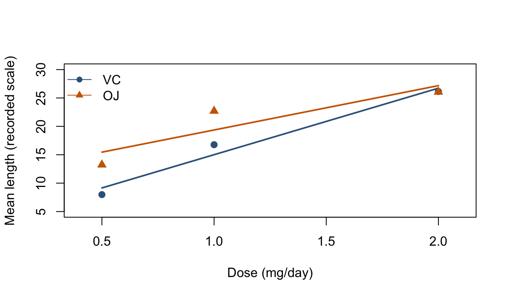

Chapter 4 compared models. Here we learn to build and interpret them when predictors include groups and interactions.
Learning Objectives
By the end of this chapter, students should be able to:
compare unadjusted and adjusted associations;
code a factor and count its design-matrix columns;
interpret additive and interaction models;
explain how centering and reference groups affect coefficient meanings;
choose a model comparison for a scientific question and check it in R.
Reading. Multiple regression, qualitative predictors, and interactions in Montgomery, Peck, and Vining (Montgomery et al. 2021) and Seber and Lee (Seber and Lee 2003).
The fitted means are \(\hat{\mathbf Y}=\mathbf X\hat{\boldsymbol\beta}\). Under the normal-model assumptions, Chapter 4’s partial F test compares nested mean models. We now use these tools to interpret the columns and coefficients: which mean responses are being compared, and what is held fixed? An adjusted association alone does not establish causation.
NoteMotivation: what comparison does a coefficient describe?
Trees.Chapter 4 asked whether height adds information about timber volume beyond diameter. Now compare two trees of the same diameter: what mean-volume difference corresponds to one extra foot of height? Why might that answer differ from a regression using height alone?
Vitamin C. At the same dose, how does mean odontoblast length differ between orange juice and ascorbic acid? Could that difference change with dose?
These questions lead from adjusted slopes to group indicators and interactions. We will write the mean model first, then read the corresponding coefficient or combination of coefficients.
5.1 Multiple regression and adjusted interpretation
Chapter 4 used an additive model with two predictors. We now make the word additive explicit and connect the mean function to the matrix notation from Chapter 1 and Chapter 2.
Definition 5.1 (Additive Linear Mean Model) At predictor values \((x_1,\ldots,x_k)\), let \(\mu(x_1,\ldots,x_k)\) denote the mean response at that predictor profile. An additive linear mean model specifies
Additive means that the intercept and the separate predictor contributions are added together. There are no interaction terms, such as \(\beta_{12}x_1x_2\): the contribution associated with changing one predictor does not depend on the values of the others. Linear means that each contribution here has the form \(\beta_jx_j\).
NoteAdditivity concerns the mean function
Predictors may be correlated; additivity does not require their independence. More generally, a mean of the form \(\beta_0+\sum_j f_j(x_j)\) is additive even when the separate functions are curved. Here we use \(f_j(x_j)=\beta_jx_j\). An interaction term couples predictors and changes this additive structure; Section 5.4 develops that extension.
Connection with the earlier notation. As in Chapter 1 and Chapter 2, first treat predictor values as fixed. For observation \(i\), write \(\mu_i=\mu(x_{i1},\ldots,x_{ik})\) and
Following Chapter 2, \(\mathbf x_i=(1,x_{i1},\ldots,x_{ik})\) is the column vector including the intercept entry. Its transpose \(\mathbf x_i^\top=(1\;x_{i1}\;\cdots\;x_{ik})\) is row \(i\) of the design matrix. Thus \(\mu_i\) is the systematic mean part, while \(\varepsilon_i\) is the individual deviation from it.
Design matrix and parameter count. Stacking these rows gives the familiar matrix form:
The mean vector is \(\boldsymbol\mu=(\mu_1,\ldots,\mu_n)=\mathbb E(\mathbf Y)=\mathbf X\boldsymbol\beta\), so \(\mathbf Y=\boldsymbol\mu+\boldsymbol\varepsilon=\mathbf X\boldsymbol\beta+\boldsymbol\varepsilon\). This is the same model as before, now written to show what each mean contains. If predictors are random, use the conditional statements \(\mathbb E(\mathbf Y\mid\mathbf X)=\mathbf X\boldsymbol\beta\) and \(\mathbb E(\boldsymbol\varepsilon\mid\mathbf X)=\mathbf0\).
We assume full column rank, so \(\operatorname{rank}(\mathbf X)=p\). Here \(k\) counts predictor columns, not necessarily named variables: a factor can contribute several indicator columns. The tree model below has height and diameter, giving \(k=2\) and \(p=3\). Later, adding interaction columns preserves the matrix form but changes the additive mean structure.
Definition 5.2 (Adjusted Regression Coefficient) In the additive linear mean model of Definition 5.1, choose \(j\in\{1,\ldots,k\}\). Then \(\beta_j\) is the mean-response difference for a one-unit increase in \(x_j\), holding the other predictors fixed:
Why does the difference equal the coefficient? With the other predictors fixed, \(C_j=\beta_0+\sum_{\ell\ne j}\beta_\ell x_\ell\) is the same in both means. Thus the one-unit mean difference is
The intercept and all unchanged predictor contributions cancel, leaving \(\beta_j[(x_j+1)-x_j]=\beta_j\). A change of \(h\) units gives the mean difference \(h\beta_j\) in this additive model.
Example 5.1 (The Same Height Measurement, Two Comparisons) Return to the 31 black cherry trees. Compare the height coefficient with and without adjustment for diameter. As before, Girth records diameter in inches; Height is in feet and Volume in cubic feet.
The height-only slope is 1.543 cubic feet per foot. After adjustment, it is 0.339: among trees of the same diameter, a one-foot height difference corresponds to 0.339 more cubic feet of fitted mean volume.

Figure 5.1: Dashed: height-only fit. Solid: adjusted mean at diameter 13 inches. Color shows observed diameter; distances to the solid line are not residuals because the trees have different diameters.
Taller trees in this sample also tend to have larger diameters. The height-only slope includes that accompanying variation; the adjusted slope compares heights at fixed diameter. The two slopes answer different questions.
Exercise 5.1 (Interpret 0.339) Which interpretation matches the adjusted height coefficient?
A. Increasing any tree’s height by one foot causes its volume to increase by 0.339 cubic feet.
B. At the same diameter, a one-foot height difference corresponds to a 0.339-cubic-foot difference in fitted mean volume.
C. Every tree one foot taller has exactly 0.339 more cubic feet of observed volume.
Solution 5.1. B. The coefficient describes an adjusted mean association. It is neither an automatic causal effect nor an exact difference between individual responses.
NoteSummary: adjusted versus unadjusted coefficients
An unadjusted (or non-adjusted) coefficient comes from a model using the predictor of interest alone. An adjusted coefficient comes from a model that also includes specified other predictors. Always name what is being adjusted for.
Unadjusted height coefficient
Height coefficient adjusted for diameter
R model
Volume ~ Height
Volume ~ Height + Diameter
Comparison
A one-foot height difference, without holding diameter fixed
A one-foot height difference at the same diameter
Fitted slope
1.543 cubic feet per foot
0.339 cubic feet per foot
The first comparison allows diameter to vary along with height; the second holds diameter fixed in the fitted mean model. These coefficients answer different questions, so they need not agree. Neither coefficient by itself establishes a causal effect or predicts the exact difference between two individual trees. In an additive model the adjusted slope is constant; with interactions, its interpretation depends on the interacting predictors, as developed in Section 5.4.
5.2 Categorical predictors are columns of a design matrix
Group labels have no numerical spacing. Coding unordered groups A, B, and C as 1, 2, and 3 and fitting one slope would impose equally spaced means.
Definition 5.3 (Reference-Group Indicator Coding) Let \(G_i\) be the group of observation \(i\). Suppose A, B, and C are all possible groups and every observation belongs to exactly one of them. With A as the reference group, define
Thus the B-minus-C difference is \(\beta_B-\beta_C\). More generally, for \(g\) groups, reference coding uses an intercept and \(g-1\) indicators, giving \(g\) identifiable parameters in this group-only model when every group is observed.
A is represented, not omitted. An A observation has \(D_{Bi}=D_{Ci}=0\), so its mean is \(\beta_0\). Omitting a separate A indicator does not remove any A observations. The intercept column is 1 for every observation: its contribution is \(1\times\beta_0\). This does not mean that the intercept coefficient equals 1.
Use model.matrix() to check the coding; (Intercept), groupB, and groupC correspond to \(\mathbf 1\), \(\mathbf D_B\), and \(\mathbf D_C\):
Show R code
ch5_groups <-data.frame(group =factor(c("A", "B", "C"),levels =c("A", "B", "C")))contrasts(ch5_groups$group) <-contr.treatment(levels(ch5_groups$group), base =1)ch5_X_reference <-model.matrix(~ group, data = ch5_groups)knitr::kable(ch5_X_reference, row.names =FALSE)
(Intercept)
groupB
groupC
1
0
0
1
1
0
1
0
1
ImportantWhy adding an A indicator would be redundant
To examine what would happen if we also included an A indicator, first define
Stacking the values over observations gives \(\mathbf D_A=\mathbf 1-\mathbf D_B-\mathbf D_C\). Therefore \([\mathbf 1\;\mathbf D_A\;\mathbf D_B\;\mathbf D_C]\) has four columns but rank only 3 when all three groups occur. Its four coefficients cannot be uniquely identified: adding a constant to the intercept and subtracting it from each group coefficient leaves every fitted mean unchanged.
The original matrix \([\mathbf 1\;\mathbf D_B\;\mathbf D_C]\) has no such redundancy. Also, \(\mathbf D_A\) is not the intercept column: \(\mathbf D_A\) is 1 only for A observations, whereas \(\mathbf 1\) is 1 for every group.
An equivalent model without a separate intercept. We can instead use all three indicators and write
Each coefficient now represents its group’s mean directly. In R, y ~ 0 + groupremoves the intercept term. Its design matrix makes the distinction clear:
Show R code
ch5_X_means <-model.matrix(~0+ group, data = ch5_groups)knitr::kable(ch5_X_means, row.names =FALSE)
groupA
groupB
groupC
1
0
0
0
1
0
0
0
1
Here groupA, groupB, and groupC are the three indicator columns. Both valid codings span the same mean vectors and give the same fitted values, residuals, and SSE. Removing the separate intercept here does not force the A mean to zero; it is estimated by the groupA coefficient.
Check the column counts and ranks in R:
Show R code
ch5_X_redundant <-cbind(`(Intercept)`=1, ch5_X_means)ch5_codings <-list(ch5_X_reference, ch5_X_redundant, ch5_X_means)knitr::kable(data.frame(Coding =c("Intercept + B + C", "Intercept + A + B + C", "A + B + C"),Columns =vapply(ch5_codings, ncol, integer(1)),Rank =vapply(ch5_codings, function(X) qr(X)$rank, integer(1))),row.names =FALSE)
Coding
Columns
Rank
Intercept + B + C
3
3
Intercept + A + B + C
4
3
A + B + C
3
3
The two full-rank codings each estimate three group means; the four-column coding adds a redundant coefficient, not another identifiable mean.
Example 5.2 (Different Coefficients, the Same Group Means) Suppose the fitted means for A, B, and C are 18, 22, and 19.
Reference
Intercept
Other coefficients
A
18
B minus A: 4; C minus A: 1
B
22
A minus B: -4; C minus B: -3
Changing the reference changes the coefficient meanings, but preserves fitted means, residuals, and SSE. An individual coefficient test now addresses a different comparison.
Exercise 5.2 (Count Columns, Not Variable Names) A model contains an intercept, two continuous predictors, and one four-level factor using reference coding. Assume all columns are independent and \(n=40\).
How many regression parameters are there?
What are the residual degrees of freedom?
Would replacing the three factor indicators by all four indicators while retaining the intercept add an identifiable parameter?
Solution 5.2. There are \(p=1+2+3=6\) parameters and \(40-6=34\) residual degrees of freedom. No: all four indicators together with the intercept introduce a redundant column.
5.3 A continuous predictor and a group indicator
R’s ToothGrowth data record odontoblast length in 60 guinea pigs. Each animal received vitamin C at 0.5, 1, or 2 mg/day, delivered as orange juice (OJ) or ascorbic acid (VC).
Question. How does the mean response vary with dose, and is the OJ-minus-VC mean difference the same at every dose?

Figure 5.2: Each cell represents 10 animals. Compare doses across a row and OJ versus VC within each column. Does the mean gap change across columns? This is a schematic, not observed outcomes.
Show R code
ch5_tooth <- datasets::ToothGrowthch5_tooth$supp <-factor(ch5_tooth$supp, levels =c("VC", "OJ"))ch5_tooth$dose_c <- ch5_tooth$dose -1ch5_tooth$dose_f <-factor(ch5_tooth$dose, levels =c(0.5, 1, 2))contrasts(ch5_tooth$supp) <-contr.treatment(levels(ch5_tooth$supp), base =1)contrasts(ch5_tooth$dose_f) <-contr.treatment(levels(ch5_tooth$dose_f), base =1)stopifnot(!anyNA(ch5_tooth))ch5_cell_summary <-aggregate( len ~ supp + dose, data = ch5_tooth,FUN =function(y) c(n =length(y), mean =mean(y)))ch5_summary_table <-data.frame(ch5_cell_summary[1:2], ch5_cell_summary$len)knitr::kable(ch5_summary_table, digits =2,col.names =c("Method", "Dose (mg/day)", "n", "Mean length"))
Method
Dose (mg/day)
n
Mean length
VC
0.5
10
7.98
OJ
0.5
10
13.23
VC
1.0
10
16.77
OJ
1.0
10
22.70
VC
2.0
10
26.14
OJ
2.0
10
26.06
Both methods have 10 animals at each dose, allowing comparisons at the same observed dose.
Definition 5.4 (Additive Continuous-by-Group Model) Let \(x\) be dose, \(x_c=x-1\), and \(z=\mathbb 1\{\mathrm{OJ}\}\). The additive model is
\[
\mu(x,z)=\beta_0+\beta_xx_c+\beta_gz.
\]
Method
Mean function
Slope in dose
VC (\(z=0\))
\(\beta_0+\beta_x(x-1)\)
\(\beta_x\)
OJ (\(z=1\))
\(\beta_0+\beta_g+\beta_x(x-1)\)
\(\beta_x\)
The lines are parallel, with constant OJ-minus-VC difference \(\beta_g\). Centering dose at 1 makes \(\beta_0\) the VC mean at 1 mg/day. The design row is \((1\;x_c\;z)\), so \(p=3\) when full rank.
Show R code
ch5_fit_add <-lm(len ~ dose_c + supp, data = ch5_tooth)
The fitted mean is
\[
\widehat\mu(x,z)=15.336+9.764(x-1)+3.700z.
\]
At a fixed method, a one-mg/day increase corresponds to 9.764 more units of fitted mean length. At a fixed dose, OJ exceeds VC by 3.700 units. This model imposes a straight-line dose response and the same slope for both methods.
5.4 Interactions and conditional comparisons
Definition 5.5 (Continuous-by-Group Interaction) Add the product column \(x_cz\):
The OJ-minus-VC mean difference now depends on dose:
\[
\boxed{\Delta(x)=\beta_g+\beta_{xg}(x-1).}
\]
Here \(\beta_g\) is the difference at 1 mg/day, and \(\beta_{xg}\) is the difference in slopes. The design row is \((1\;x_c\;z\;x_cz)\), giving \(p=4\) when full rank.
In R, dose_c * supp expands to dose_c + supp + dose_c:supp. The last design column is zero for VC and equals centered dose for OJ:
The VC slope is 11.716; the OJ slope is 7.811, using unrounded estimates. Their fitted mean difference is about 4.351 at 1 mg/day and 0.446 at 2 mg/day. The negative interaction means the gap decreases with dose, while both slopes remain positive.

Figure 5.3: The same observations fitted with parallel lines (additive) or separate slopes (interaction). Horizontal jitter is for display only; both models use the original doses.
Changing the baseline. Centering at dose \(c\) makes the group coefficient the difference at \(c\); choosing OJ as reference makes the dose coefficient the OJ slope. With all model terms retained, these recodings preserve fitted values and SSE. We use 1 mg/day because it was observed; zero dose was not.
ImportantKeep the lower-order terms
Retain dose_c and supp when interpreting dose_c:supp. Dropping a main effect imposes a baseline-dependent restriction; its individual p-value is not a reason to remove it automatically.
Exercise 5.3 (Which Difference Is Six?) Suppose \(x_c=x-1\) and \(\widehat\mu=10+2x_c+6z-x_cz\).
What is the slope for \(z=1\)?
At which original \(x\) value is the group difference 6?
What is the group difference at \(x=3\)?
Solution 5.3. The slope for \(z=1\) is \(2-1=1\). The group difference is 6 at \(x=1\), where \(x_c=0\). At \(x=3\), \(x_c=2\) and the difference is \(6-2=4\).
5.5 Match the hypothesis to the model comparison
Apply the partial F test from Chapter 4, using the same observations and the normal-model assumptions from the recap. The new task is to choose the restriction:
Question
Reduced model
Full model
Equal slopes: \(\beta_{xg}=0\)?
dose_c + supp
dose_c * supp
Identical lines: \(\beta_g=\beta_{xg}=0\)?
dose_c
dose_c * supp
Straight-line means within each method?
dose_c * supp
dose_f * supp
The first test removes only the slope difference; the second removes both the slope and intercept differences. For the third, treating dose as a factor permits six separate method-dose means (\(p=6\)), rather than two straight lines (\(p=4\)).
At the 5% level, the two-line analysis rejects both equal slopes and identical lines. However, the last comparison also rejects the straight-line restriction. The plot shows the departure: the means at 1 mg/day lie above the fitted lines. Thus the lines illustrate coefficient interpretation, but the six-cell model is a better starting point for dose-specific comparisons. Chapter 6 takes up the broader question: how can we revise the functional form and choose model terms?

Figure 5.4: Points show the six observed method-dose means; lines show the interaction fit. A factor-dose model reproduces each point, while straight lines cannot.
Summary
State what is held fixed when interpreting a slope.
A \(g\)-level factor uses \(g-1\) indicators with an intercept; the reference group determines the coefficient meanings.
An additive model gives parallel lines; an interaction allows the group difference to vary with dose.
Equal slopes, identical lines, and straight-line shape are different restrictions. Choose the model comparison to match the question.
5.6 Practice Problems
Exercise 5.4 (Concept Check: True or False?)
With an intercept, a three-level factor contributes two independent indicator columns when all levels are observed.
Changing the reference group changes the fitted means and SSE.
A negative interaction coefficient implies a negative slope in the non-reference group.
Replacing numeric dose by a three-level factor must preserve the fitted means.
Solution 5.4.
True. One level is the reference.
False. The same mean model is represented with different coefficients.
False. The non-reference slope is the main slope plus the interaction coefficient.
False. Factor coding can relax the straight-line restriction.
Exercise 5.5 (Practice: State the Restrictions and Degrees of Freedom) Consider \(n=48\) observations, a binary group \(z\), and a continuous predictor \(x\). Assume the relevant design matrices have full rank and the normal-model assumptions hold. The full model is \(\mu=\beta_0+\beta_xx+\beta_gz+\beta_{xg}xz\).
Write the null hypothesis for parallel lines and give both F degrees of freedom.
Write the null hypothesis for identical lines and give both F degrees of freedom.
Express the group difference at \(x=2\) as a linear combination of coefficients.
If the full model has SSE 440 and the additive model has SSE 500, compute the partial F statistic for equal slopes.
Solution 5.5.
\(H_0:\beta_{xg}=0\); degrees of freedom \((1,44)\).
\(H_0:\beta_g=\beta_{xg}=0\); degrees of freedom \((2,44)\).
\(\Delta(2)=\beta_g+2\beta_{xg}\), with column vector \(\mathbf{l}=(0,0,1,2)\) in the displayed coefficient order.
\(F=\{(500-440)/1\}/(440/44)=6\).
Montgomery, Douglas C, Elizabeth A Peck, and G Geoffrey Vining. 2021. Introduction to Linear Regression Analysis. John Wiley & Sons.
Seber, George AF, and Alan J Lee. 2003. Linear Regression Analysis. John Wiley & Sons.